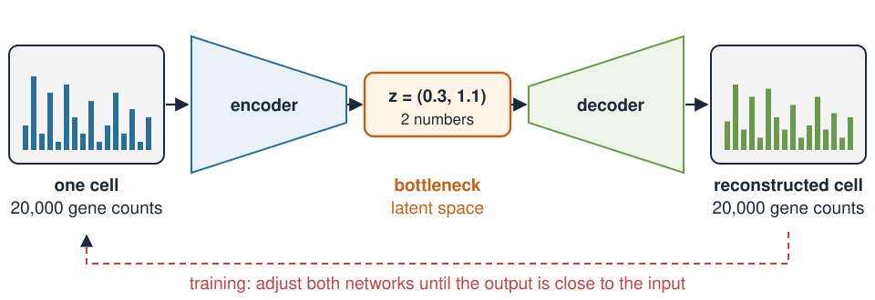
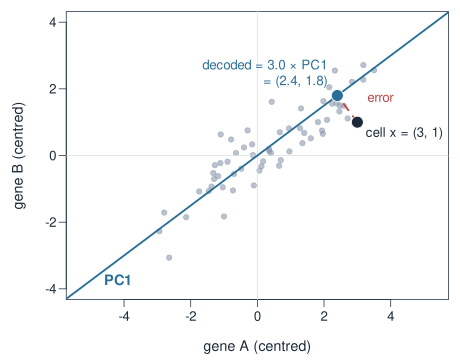
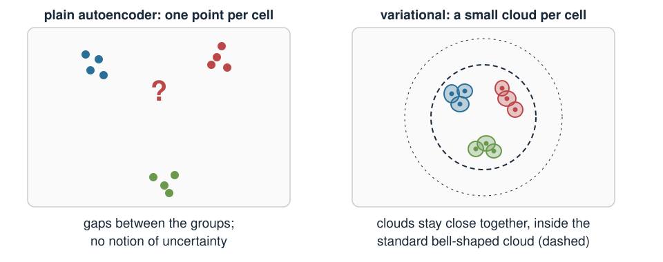
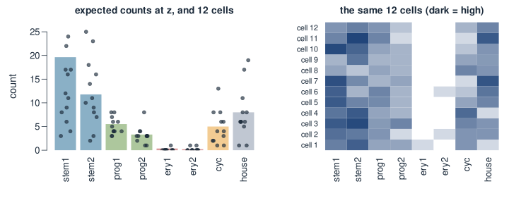
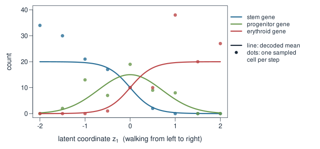
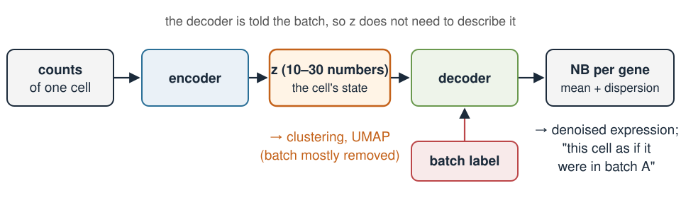

Variational autoencoders: encoders, decoders and generating cells
Extra material — Variational autoencoders
Quantitative biology and integrative omics
About this lecture
PCA and UMAP gave every cell a few coordinates in a latent space. This lecture is about a method that also goes the other way: from a few coordinates back to a whole cell.
An autoencoder = an encoder (cell → a few numbers) and a decoder (a few numbers → cell).
PCA is the simplest autoencoder. A neural network allows curved maps instead of straight ones.
Variational: each cell becomes a small cloud in latent space, not a point.
The decoder gives a distribution of counts (negative binomial), so it can generate new cells.
One latent point → many different cells, just as replicate cells of the same state differ.
Pictures and intuition only: no training maths.
Many genes, few real knobs
A cell is measured on ~20,000 genes, but its expression is not 20,000 independent choices.
What really varies between cells is a handful of factors: cell type, position along a differentiation path, cell-cycle phase, stress, …
Genes respond to these factors together: a T cell switches on dozens of T-cell genes at once.
So the cells lie close to a low-dimensional shape inside gene space.
We have seen this already:
Method
Cell → few numbers
Few numbers → cell
PCA
scores (projection on the PCs)
scores × loadings
UMAP
2D layout
no way back
Autoencoder
encoder
decoder
The autoencoder: squeeze, then rebuild

The encoder compresses a cell into a few numbers \(z\), its position in latent space.
The decoder rebuilds the whole expression profile from \(z\) alone.
Training adjusts both until the output is close to the input, for thousands of cells.
The narrow bottleneck is the point: to rebuild 20,000 genes from 2 numbers, those 2 numbers must capture what matters most about the cell.
PCA is a linear autoencoder

Two genes, one number (PC1, \(\mathbf{u} = (0.8, 0.6)\)):
Of all straight-line encoders and decoders, PCA gives the smallest total reconstruction error.
A neural network replaces both straight maps by curved ones: same hourglass, more flexible.
Why curved maps help
A differentiation path is a curve in gene space: stem genes fade, progenitor genes rise and fall, erythroid genes switch on.
PCA needs two axes to hold this one curve, and draws it as a horseshoe (exercise, R part).
A decoder with curved maps can lay the path along one latent direction and bend it back into gene space.
The same idea as the “linear flattens the manifold” problem from Dimensionality reduction & clustering, now with a way back to genes.
A neural network is just a flexible function with many knobs (weights). Here it is small: one hidden layer of 32 units.
What a plain autoencoder lacks

A plain autoencoder places each training cell at one point. Nothing says what the decoder should do between the points:
A point in a gap may decode to something that looks like no real cell.
There is no notion of how sure we are about a cell’s position.
So we cannot simply pick a point and generate a believable new cell.
“Variational”: a cloud instead of a point
The encoder outputs a centre and a spread for every cell: a small cloud of likely positions.
During training, the decoder must rebuild the cell from random points inside its cloud, so every point near the cell has to decode to something like it.
A penalty keeps every cloud close to one standard bell-shaped cloud around 0, so the clouds stay close together and fill the space with few gaps.
The spread is a statement of uncertainty: few counts → wide cloud.
In Bayesian words: the standard bell-shaped cloud is the prior for \(z\), and the cell’s cloud is an approximate posterior for where that cell sits in latent space. “Variational” names the method that finds these approximations.
The decoder outputs a distribution
For counts, the decoder does not output one cell. For every gene it outputs the parameters of a count distribution:
\[\text{gene } g \text{ in a cell at } z: \qquad \text{count} \sim \text{NB}\big(\text{mean} = \mu_g(z),\ \text{dispersion } \phi_g\big)\]
The mean\(\mu_g(z)\) changes with the position \(z\): this is the biology.
The spread around it is the overdispersed counting noise of Error models: \(\text{Var} = \mu + \phi\mu^2\).
Training asks: how probable are the observed counts under this NB? (A likelihood, as in Bayesian statistics.)
This is what scVI does for single-cell RNA-seq (Lopez et al. 2018).
Generating cells: one \(z\), many cells
To generate a cell: pick a point \(z\) → decode to expected counts → draw counts from the NB.

The same\(z\) gives different cells every time. They differ only by sampling noise, as real cells in the same state do.
A walk through latent space
Different \(z\) → different cell states. Moving \(z\) along a line gives a smooth transition:

The midpoint is not the average of the two end profiles: the progenitor gene peaks at \(z_1 = 0\) (mean 15) but is only 5.5 at both ends. The decoder bends the path through gene space.
Try it: one \(z\), many cells
Try it: digits
Uses in single-cell analysis

scVI: the latent \(z\) is used for clustering and UMAP instead of PCA. Telling the decoder the batch lets \(z\) ignore batch differences (batch correction), and decoded means give denoised expression.
Several modalities in one latent space: totalVI for RNA + surface proteins (Gayoso et al. 2021), MultiVI for RNA + chromatin accessibility (Ashuach et al. 2023). Compare the joint latent space of Multiome data integration.
Generating or imputing: decode \(z\) to fill in missing values or simulate cells.
Caveats: do not over-interpret
Latent axes have no fixed meaning. Unlike PCA loadings, \(z_1\) and \(z_2\) are not ranked or interpretable by construction; a rotated or flipped latent space can fit about as well.
Results depend on training: random starting values, network size and training length all change the latent space. Retrain with another seed and the picture moves.
Generated cells are only as good as the training data. Far from the data, the decoder extrapolates; between groups it interpolates. Neither is guaranteed to be biology.
Distances in latent space are not calibrated; the same reading rules as for a UMAP apply.
Uncertainty is approximate: the clouds are a convenient shape, not the exact posterior.
Summary
Idea
In one line
Encoder
cell → a few numbers \(z\) (its place in latent space)
Decoder
\(z\) → expected expression of every gene
Autoencoder
trained so that decode(encode(cell)) ≈ cell, through a narrow bottleneck
PCA
the linear autoencoder: encode = project, decode = score × PC
Variational
each cell → a small cloud; clouds kept close to a standard bell-shaped cloud
Decoder output
a distribution: NB per gene for counts (scVI)
Generative
one \(z\) → many different cells; a walk in \(z\) → a smooth transition
Caution
axes not interpretable; far from the data the decoder only guesses